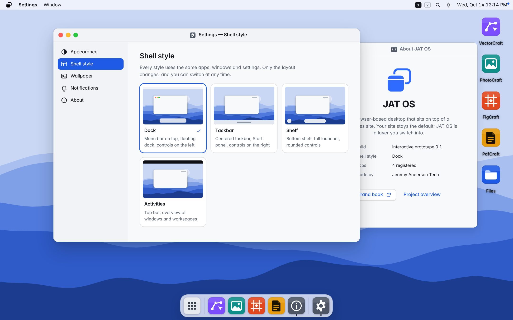
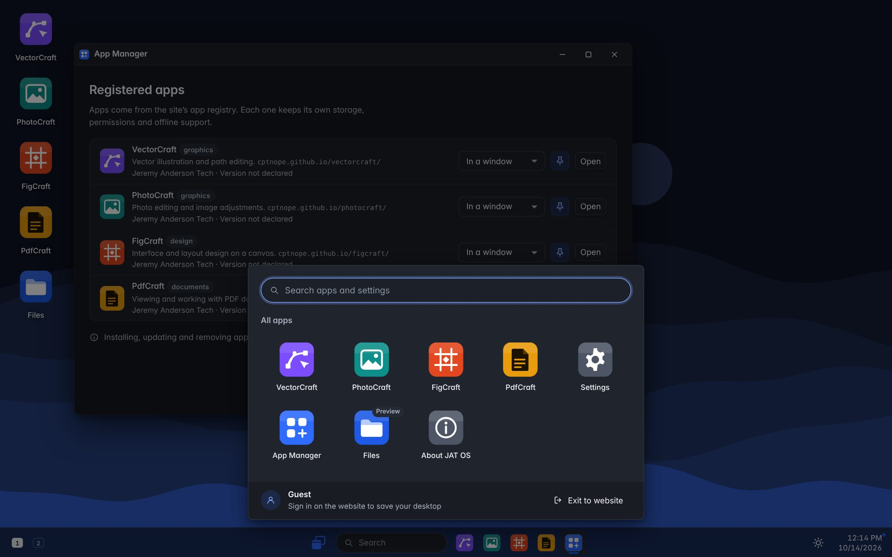
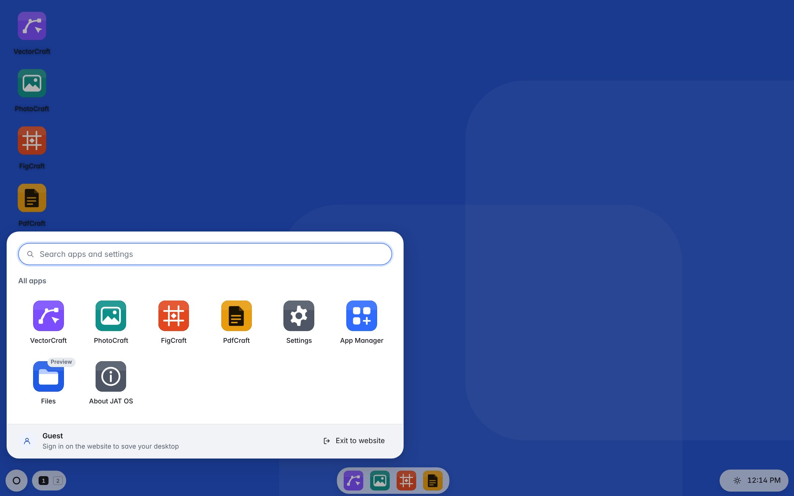
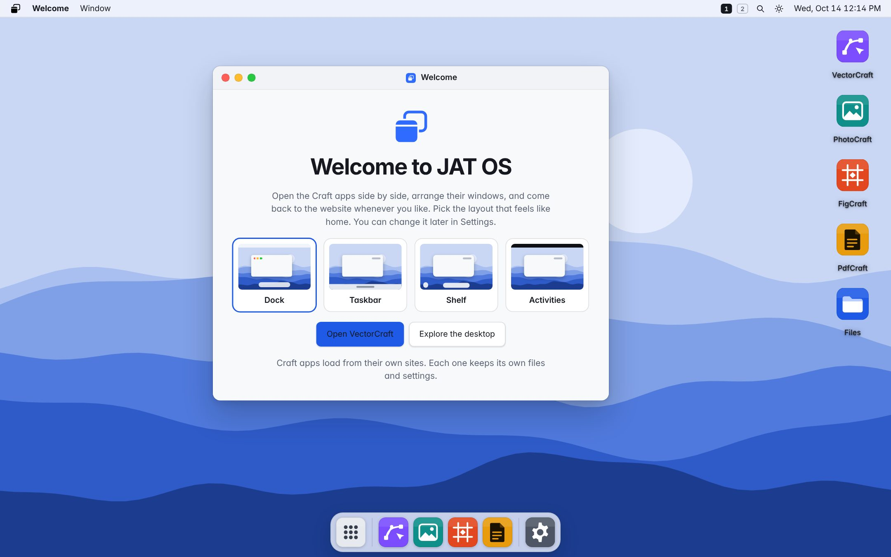
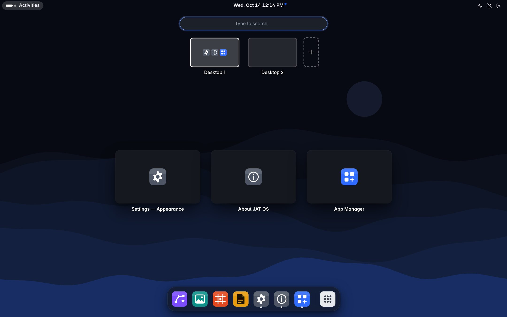
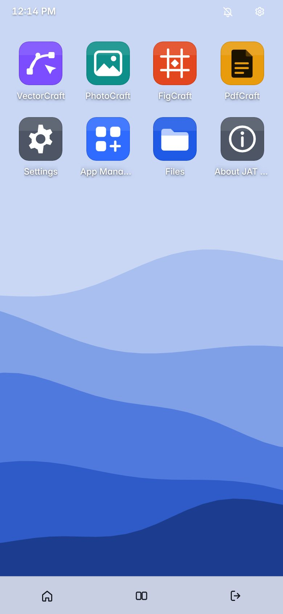
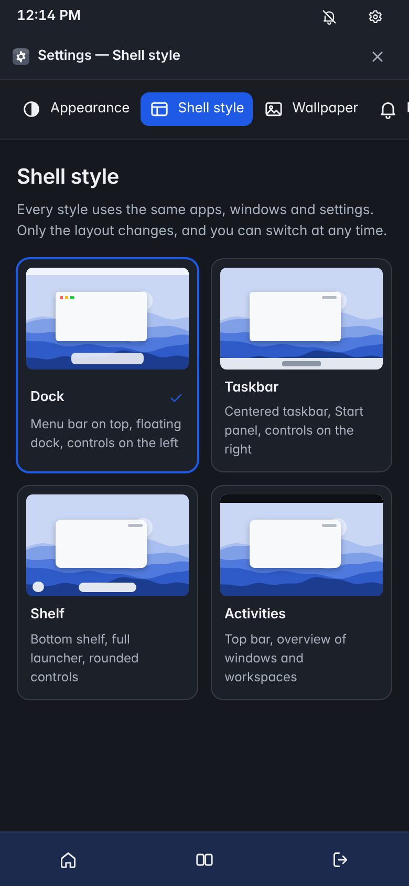

A desktop for the Craft apps, on top of your website.
JAT OS is a browser-based operating layer delivered as a WordPress plugin. Visitors keep the normal site. Anyone can switch into a desktop with windows, a launcher and four layouts that feel like home.

Four layouts, one system
Every shell style uses the same tokens, components, apps and settings. Only the layout, the window controls and the corner shapes change, and people can switch at any time.

Taskbar
A centered taskbar with Start and search, window controls on the right, and an active-window indicator under each app.

Shelf
A floating shelf, a launcher that holds every app and setting, and rounded controls made for touch.

Dock
The default. A menu bar with the active app’s name, a floating dock, and close, minimize and zoom on the left.

Activities
A top bar and an overview that shows every window and desktop at once. Press Ctrl + Space to open it.
What’s here
The foundations for building JAT OS for real: the brand, the system and a working shell to test ideas against.


On phones, apps run full screen with a home screen and app switcher.
Built, and still to build
The example is a design prototype, not the plugin. This is exactly what works today.
| Area | Status | Notes |
|---|---|---|
| Website ⇄ OS toggle | Works | Enter and exit, browser Back exits. The demo site’s styles are untouched because the shell renders in a shadow root. |
| Window management | Works | Drag, resize, minimize, maximize, edge snapping with preview, focus and stacking, two to four desktops, title bar menu. |
| Shell styles | Works | Dock, Taskbar, Shelf and Activities, switchable live from Settings, quick settings or the desktop menu. |
| Launcher and search | Works | Apps and settings, arrow-key navigation, Ctrl + Space. |
| Craft apps in windows | Works | Embedded in a sandboxed frame, with a new-tab option, loading, slow and offline states. |
| Preferences and restore | This browser only | Saved in localStorage. The plugin will save to WordPress user meta. |
| Files | Preview | An honest empty state. Planned to show the WordPress Media Library. |
| WordPress plugin, REST API, admin | Planned | Architecture in the brand book. |
| App bridge (jat-bridge/1) | Planned | Draft protocol in the brand book. No app speaks it yet. |
In the repository
Everything is static and hosted on GitHub Pages. The shell is TypeScript compiled to plain ES modules, with no framework.
- index.html
- this overview
- brandbook/
- brand book and design system
- example/
- demo site + JAT OS shell (src/*.ts → dist/*.js)
- assets/
- tokens.css · tokens.json · components.css · icons.svg · logo/ · apps/ · wallpapers/ · screens/
- registry/
- apps.json · manifest.schema.json
- PRODUCT.md
- product truth (Impeccable)
- DESIGN.md
- visual system record (Impeccable)
- CLAUDE.md
- notes for working on this repo with Claude